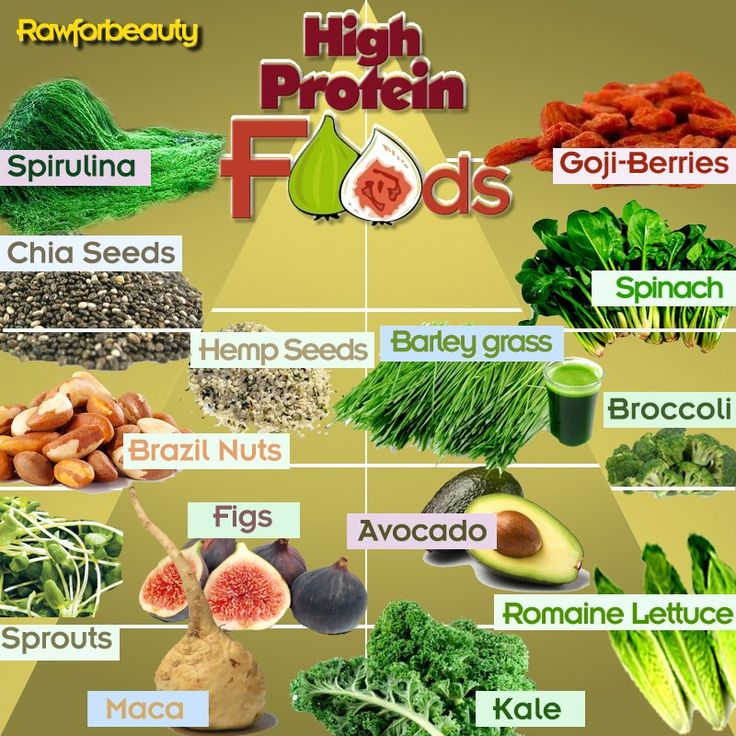
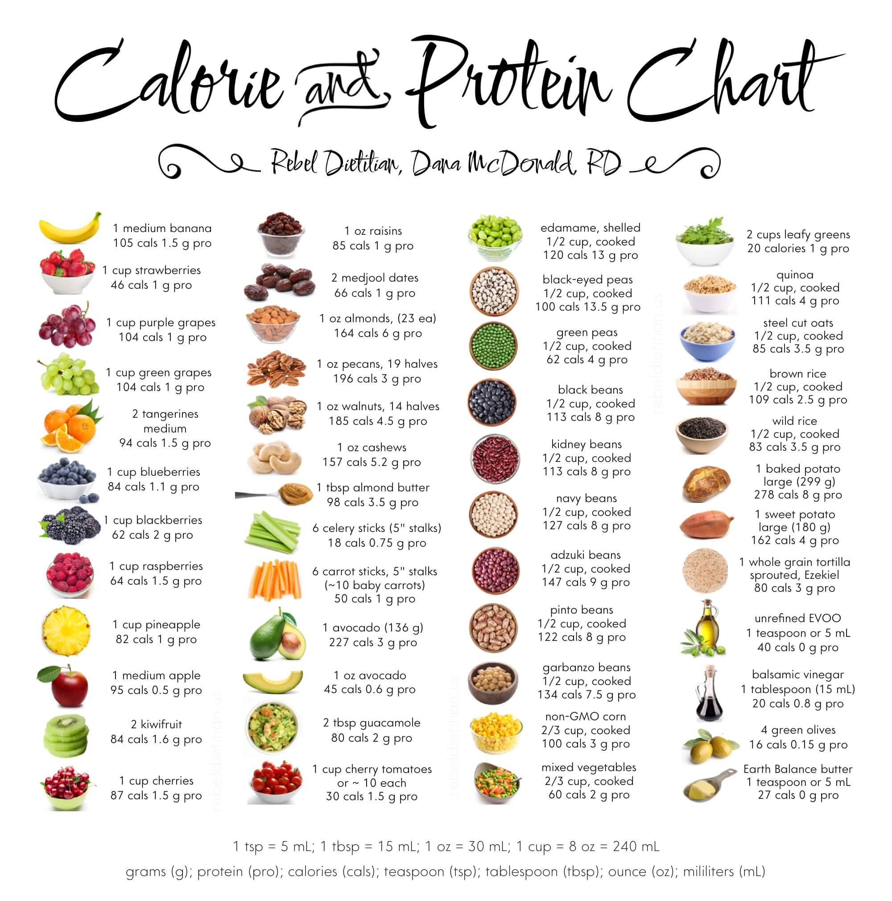

Wellness and Nutrition expert, Dr Shikha Sharma tells me, "About 30 to 35% of your diet should consist of protein. This could be in the form of pulses, milk, leafy greens, eggs, white meat or sprouts." I'd agree since protein is the main component of all of your body's cells, as well as your hair, skin and soft tissues. Moreover, we burn more calories in digesting proteins than carbs. Since men tend to be muscular and usually weigh more than women, they require more protein.
Dr. Rupali Dutta, Chief Clinical Nutritionist at Fortis-Escorts Hospital highlights the issue of protein deficiency in our country and recommends that we should have one helping of protein with every meal, be it in any form like whole dals, cottage cheese or gram flour or 30 grams of pulses as per NIN. A recent survey conducted by the Indian Market Research Bureau revealed that 9 out of 10 people of the sample consumed inadequate amount of protein. This could be due to the increasing consumption of convenience foods that are high in carbs and sugars and low in protein.
Men : 60 grams/day
Female : 55 grams/day
 